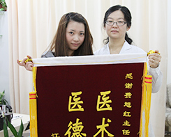
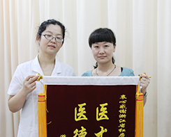
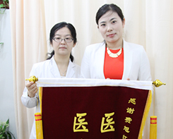
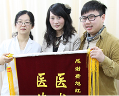
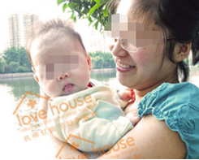
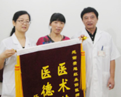

别让无子宫无阴道，成为幸福路上的阻力【杭州患者】

-
- 患者：李艳 18岁
- 诊断：无子宫无阴道
李艳是杭州本地的姑娘，自青春期后月经迟迟未来，直到2015年3月 20号…【详情】
幼稚子宫月经正常，并不难【苏州患者】
- 
-
- 患者：王青 19岁
- 诊断：子宫小
月经稀发、痛经，常常难以忍受这伴随着王青的疾病在多家医院都是表示无【详情】
如今的我也能有完美的性生活了【湖南患者】
- 
-
- 患者：李萍 30岁
- 诊断：阴道闭锁
婚前无月经、腹痛，婚后无法性生活，2015年9月李萍就诊于行杭州红房子…【详情】
33岁，我终于是期盼来了我自己的宝宝【新疆患者】
-
- 患者：郭蓉 33岁
- 诊断：幼稚子宫
好不容易费尽周折怀上了自己的宝宝，可是却不明不白的流产2次从遥远的…【详情】
手术仅仅2个月，月经就恢复了正常【河南患者】
- 
-
- 患者：刘芳 26岁
- 诊断：幼稚子宫
结婚多年却是一直没有自己的宝宝，结果到医院一查才发现自己是幼稚子宫…【详情】
遇见你是我的幸运，谢谢你红房子【江苏患者】
- 
-
- 患者：张苗 21岁
- 诊断：始基子宫
当初一直没来月经的张苗，吃过不少的药，可是依旧没效果，和男友性生活…【详情】
自从有了孩子，过去的辛酸又算得了什么呢【洛阳患者】
- 
-
- 患者：蒋芸 25岁
- 诊断：子宫纵膈
怀不上、怀不上、还是还不上孕，这可是急坏了蒋芸，面对着家里的压力与…【详情】
谢谢费主任，这是我最想要表达的言语【河北患者】
- 
-
- 患者：王桂兰 28岁
- 诊断：处女膜闭锁
时常出现腹痛、性生活无法进行，在新婚之夜就出现十分尴尬的局面。这让…【详情】
石女的她终于寻觅到了自己的幸福【山西患者】
-
- 患者：张丽 26岁
- 诊断：先天性无子宫无阴道
如今的美丽新娘，当初的张丽怎么也会想不到自己能有这么幸福的一天，自…【详情】
自卑，那已经是过去时，我是世上最美的新娘【山东患者】

-
- 患者：谷永湘 25岁
- 诊断：始基子宫伴随无阴道
在17岁的时候，到医院检查出来自己是始基子宫这个病之后，谷永湘就是…【详情】

(本网站已加密,绝对保障个人隐私)